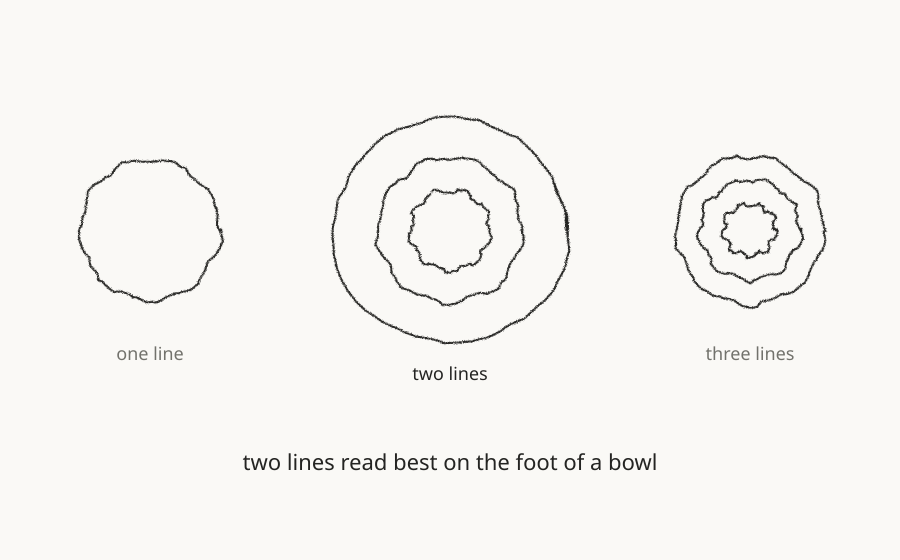

Mulgyeol Ceramics
A one-person ceramics studio named after the ripple her fingers leave in the clay
- Who
- A potter who throws tableware in a shared kiln after work (fictional)
- Field
- Craft
- Scope
- Naming, identity, packaging

Example design outputs · A kraft-wrapped bundle of bowls with a Mulgyeol label, a clay disc stamped with a ripple mark, and a story card
The person and their story
For years she has thrown everyday tableware after work, in a studio with a shared kiln. Most pieces sell through friends of friends. People recognise her bowls by touch: a shallow ripple her fingers leave on every wall. Yet the pieces leave the studio without a name.
The value we found
The signature was already there. The ripple is a trace no one else could imitate. The problem was that it had no name, so nobody could recommend the studio or find it again.
Brand strategy
Let the ripple introduce her. We named the studio Mulgyeol (물결, “ripple”) and built everything from one stamp she can press into wet clay herself.

Design outputs
- A ripple stamp for the foot of each piece
- Kraft wrapping with a hand-applied label
- A story card written for each firing
- A widely spaced serif wordmark
The next chapter, together
A system she can stamp, write and extend herself, without a designer. Whether her next step is a market stall or an open studio day, it starts with the same stamp.